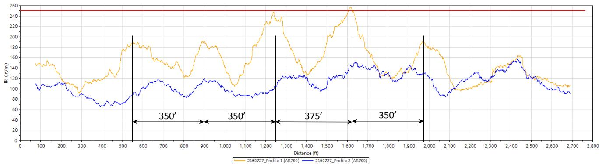

Pavement Smoothness
The quality of a pavement’s longitudinal profile as perceived by vehicle occupants. Most state DOTs implement smoothness specifications with incentive payments for very smooth pavements and penalties for rough ones. [1]
Pavement smoothness is assessed through diverse tools ranging from manual devices like the Profilograph and Dipstick to automated systems such as the inertial-based International Roughness Index (IRI) and laser scanners. [1]–[4] While the IRI serves as a standardized, vehicle-relevant metric for ride quality, specialized profilers including the GOMACO Smoothness Indicator and Real Time Profiler provide real-time feedback during slip-form paving operations. [1], [5] Other instruments like the Pavement Profile Scanner and SurPRO 2000 offer high-speed or rolling inclinometer data to capture specific longitudinal and transverse surface characteristics. [4], [6]
Pavement Smoothness is a subtopic of Surface Characteristics [21]. It is quantified using the International Roughness Index (IRI), which serves as the primary metric for evaluating the surface characteristics of concrete pavements. The IRI is categorized as a ride statistic computed from measured pavement profiles and is widely used by state agencies to monitor pavement network conditions [6].
Sources (21)
Sub-concepts (8)
Machine Control Tolerances
To meet smoothness specifications for incentive pay, model and machine control elevations must be maintained within a tight tolerance range of plus or minus 0.01 to 0.05 feet [7]. Real-time smoothness (RTS) systems can detect short-wavelength surface irregularities imparted by oscillating correcting beams that are subsequently removed by auto-float and hand finishing, explaining discrepancies between real-time IRI measurements of approximately 100 in/mi and hardened profiles averaging 65 in/mi [3]. Stringless robotic total stations controlling paver elevation can introduce periodic IRI fluctuations matching their swap spacing intervals, though reducing the distance between these stations has been shown to improve smoothness results [3], and power spectral density analysis identifies specific construction-related wavelengths contributing to roughness, such as 15-foot joint spacing and 13-foot concrete load spacing appearing as dominant harmonic wavelengths in pavement profiles [3].

FurRale rofiDtaItrati FuctatinRIConding Strigle Gn waps RI on 150’ base length matches real-time settings as viewed on the screen 27JuL2016) [3]Modern smoothness measurement involves replacing profilographs for new construction smoothness measurement [1].
Rasmussen also reported theoretical predictions of stringline impacts on smoothness, including potential negative impacts of stringline sag, survey error, and cord effect on resulting IRI [1]; consequently, projects aim to establish written best practices for stringline set-up and rules of thumb for the cost of smoothness resulting from various types of stringline error [1].
The most common type of profilograph, the California Profilograph, has a wheelbase of 25 ft [1].
Strong evidence exists that pavements that are smooth when they are built remain smooth longer than pavements that are initially rough. [1]
AASHTO Standards and Quality Assurance Frameworks
Four provisional standards support IRI-based smoothness QA:
- PP 51-03: Standard Practice for Pavement Ride Quality Specification
Two-Lift Paving: Historical Context and International Applications
Two-lift paving in Europe, particularly France, Austria, and Germany, utilizes a thicker bottom layer of lower-cost or recycled aggregate topped by a thinner, harder aggregate layer to reduce noise, increase friction, and control costs [8]. Empirical evidence indicates a functional trade-off where texture types providing high friction often increase tire-pavement noise while simultaneously decreasing overall smoothness [9]. To address this, concrete mix design systems can be integrated to rationally evaluate how specific material properties influence functional requirements, enabling the optimal design of two-lift pavements for targeted ride quality [9]. Regional applications vary: in France, continuous reinforced concrete pavement on highway A71 utilized a bottom layer over 2 inches thick with local limestone aggregates and a top layer approximately 2 inches deep made of harder aggregates to provide low noise and high friction [8]. Austria recycles old jointed reinforced concrete pavement into new two-lift construction by crushing the original road and using the material as aggregate for an 8.5-inch bottom layer, while a 1.6-inch top layer uses higher-quality harder aggregate [8]. Additionally, Germany’s Federal Highway Research Institute is examining property differences in two-lift layers to make recommendations on concrete composition, thickness, and curing of the layers [8].
Historically, from 1950 to 1990, two-lift paving was extensively implemented in many states to facilitate mesh placement in concrete interstate construction by placing the first lift at half thickness, adding welded wire mesh, and then placing a second lift [8]. Experimental two-lift projects completed between 1970 and 2004 showed that concrete costs approximately doubled when test sections were between 500 and 1000 feet long compared to normal single-lift construction [8]. Various successful implementations have been documented: a project on U.S. 75 in Iowa recycled existing composite pavement by using approximately 40% asphalt in the final nine-inch base course, capped with a four-inch conventional concrete mix [8]; North Dakota’s 1976 U.S. Highway 2 project placed a two-lift pavement from the same batch plant with no bonding problems, using locally available aggregates for a six-inch bottom lift and good-quality concrete for a three-inch top lift [8]; and a configuration featuring a three-inch top lift on a nine-inch base lift, with dowels placed in the bottom lift, proved most successful among test sections, with 23 of 33 sections still in service without maintenance costs [8]. In Washington state, two-lift paving was proposed as a solution for studded tire rutting by using different flexural strengths (e.g., 900 psi top lift) to reduce wear while maintaining lower overall costs [8]. Construction techniques involve using three levels of compressive base strengths (750 psi, 1250 psi, and 2000 psi) [8], and waiting 30 to 60 minutes before placing the second lift helps prevent mixing of the two concretes during wet-on-wet construction [8]. The bottom lift in successful projects was typically placed with a spreader box or belt placer, while the top lift was finished using a slip-form paver [8]; specifically in North Dakota, the bottom lift was consolidated using a belt placer that carried a pan with pan vibrators, while the top lift used a second belt placer and slip-form paving machine [8]. The Wirtgen GmbH two-lift slip-form paver consists of two separate machines capable of independent operation, paving widths between 16.4 feet and 50 feet with depths up to 17 inches [8], and the top paver in these systems can be equipped with a super smoother or an oscillating beam to produce the desired surface texture [8].
Concrete Overlay Design and Performance Data
In unbonded overlay designs, the existing pavement is utilized as a subbase layer beneath a flexible separation layer or interlayer, such as drainable asphalt, dense graded asphalt, or geotextile [10]. Geotextile interlayers offer enhanced drainage capabilities compared to asphalt concrete (AC) layers, which can be quantified using a core hole permeameter (CHP) test requiring a 6-inch diameter core or a rapid air permeameter (APT) test requiring a 14-inch diameter core [11]. While automated plate load testing (APLT) can quantify the mechanistic properties of underlying layers by measuring the pavement deflection basin, this analysis assumes a fully bonded layer which is not applicable to unbonded overlays; to properly assess foundation support in unbonded systems, tests should be performed directly on the foundation through a 14-inch diameter core [11]. Regarding subgrade and base materials, increasing moisture content decreases resilient modulus while increasing dry unit weight increases resilient modulus for both subbase and subgrade materials [12]. Laboratory measurements on Shelby tube samples at field anticipated stress conditions showed a subgrade resilient modulus averaging 31 MPa (4.5 ksi), which was approximately 1.5 times higher than the design value of 20.7 MPa (3.0 ksi) [12]. Additionally, the average cement-treated base (CTB) layer modulus back-calculated from falling weight deflectometer data was approximately 362 MPa (52 ksi), about 0.87 times the design value of 413.7 MPa (60 ksi) [12].
Construction and design optimization significantly impact performance; for instance, extending minimum curve lengths from 150 feet to 300 feet during overlay design has been shown to improve ride quality by preventing bumps created when following existing surface profiles over depressed areas [7]. Optimizing concrete quantities for overlays requires conducting nine-shot cross-sections at 50-foot intervals to map the existing surface, allowing engineers to develop design profiles that balance smoothness with minimum overlay depth and reduced material usage [10]. When estimating concrete without detailed surveying, agencies typically add 15 to 20 percent to the theoretical plan quantity to account for placement tolerance and surface irregularities, applying higher percentages for thinner overlays or those requiring significant cross-slope correction [10]. Milling an existing asphaltic concrete surface to a uniform longitudinal profile before placing a concrete overlay reduces the risk of concrete overruns and improves the uniformity of the final overlay depth [10], while stringless paving technology guided by computer models allows contractors to achieve accurate placement of concrete quantity to profile and cross-slope, eliminating centerline stringlines that restrict traffic flow [10]. Maturity measurements can further reduce project duration by allowing construction equipment to access newly paved concrete slabs within 30 hours compared to traditional curing times [7], and deflection testing frequencies of 1.0 mile are sufficient for overlay design on relatively uniform pavements, though smaller intervals are required in areas with severe distress [7].
 – Milling to Grade Using Automatic Machine Control [10]
– Milling to Grade Using Automatic Machine Control [10]
The inclusion of fiber in concrete overlays can cause finishing difficulties and a “hairy” surface texture due to fibers standing up during tining, though this effect is typically worn away after several days of traffic [13]. The Bonded Concrete Overlay of Asphalt Mechanistic-Empirical (BCOA-ME) design procedure provides an overlay thickness based on design parameter inputs and includes an input variable for fiber type and content [14]. Smoothness and ride quality are influenced by various factors: heavy elliptical steel dowels spaced at 18 inches achieved the most desirable ride quality, whereas 12- and 15-inch spacings of all bar types yielded lower IRI values compared to the wider 18-inch spacing [15]. Inside wheel tracks are significantly smoother than corresponding outside wheel tracks, with the passing lane inside wheel track being the smoothest of all tested paths [5]; consequently, IRI values are consistently lower in inside wheel paths than outside wheel paths, with a greater difference observed in passing lanes due to centerline tie bars and aggregate interlock [15]. Real-time IRI measurements on the right side of a paver matching existing pavement are consistently rougher than the left side, with joints (inserted dowels) and concrete load spacing having the largest influence on these readings [3]. Furthermore, transition sections exhibit more change in joint opening when wheel path only baskets are employed compared to full basket designs, a discrepancy not observed in cut or fill sections [15].
 Simulated profilograph trace, passing lane outside trace [5]
Simulated profilograph trace, passing lane outside trace [5]
Long-term performance data from Iowa indicates that concrete overlays demonstrate long-term ride quality retention, with most projects maintaining an IRI below 170 in/mi for approximately 37 years of service life [16]. Unbonded concrete overlays on concrete (UBCOCs) exhibit superior smoothness performance compared to bonded concrete overlays on concrete (BCOCs), with 90% of UBCOC sections achieving good to excellent condition versus only 72% for BCOCs [16]. Regarding joint spacing, shorter transverse joint spacing significantly improves smoothness in bonded concrete overlays on asphalt, with panels spaced at 5.5- and 6-ft outperforming those spaced at 12-, 15-, or 20-ft intervals [16], while UBCOCs with short joint spacing of 12 ft and 15 ft achieve lower IRI values than those with longer 20-ft panel lengths [16]. Designing joint spacing to achieve a ratio of slab length to radius of relative stiffness (L/ℓ) between 4 and 7 may provide the desired balance between maximum, timely joint activation and good overlay performance [14]. Analytical investigations also indicate that thin concrete overlays (4-inch to 6-inch) on existing asphalt pavements are predicted to serve longer before reaching the established International Roughness Index (IRI) performance threshold of 170 in./mi compared to UBCOCs on existing concrete pavements [14]. Finally, optimized construction practices can extend the service life of concrete overlays by nearly 20 years, delaying the point at which pavement condition drops to a PCI of 60 from approximately 27 years to Year 45 [16].
 presents changes in IRI values with age for four different concrete overlay joint spacing types. Figure 43. Iowa concrete overlay IRI performance history for four different concrete overlay joint spacing projects [16]
presents changes in IRI values with age for four different concrete overlay joint spacing types. Figure 43. Iowa concrete overlay IRI performance history for four different concrete overlay joint spacing projects [16]
Material Optimization and Performance-Engineered Mixtures (PEM)
Performance-Engineered Concrete Mixtures (PEM) utilize optimized aggregate gradations to reduce paste volume while maintaining workability, which facilitates the construction of smoother pavements and reduces vehicle fuel consumption over the pavement’s life [17]. Aggregate optimization using uniformly graded aggregates to fill voids in the matrix significantly improves workability and eliminates segregation issues that typically compromise pavement smoothness; this approach reduces the required paste content, which is the least durable component of concrete, thereby enhancing overall ride quality [18]. To predict long-term durability, the Super Air Meter (SAM) and surface resistivity testing are integrated into PEM specifications, with Colorado requiring a surface resistivity greater than 12 kΩ-cm at 28 days or an unrestrained shrinkage less than 0.05% at 28 days [17]. Additionally, contractors utilizing PEM proportioning tools report that mixtures are significantly easier to place, resulting in lower smoothness numbers and a reduced life-cycle carbon footprint for vehicles using the pavement [17]. However, air entrainment content proved problematic when adding recycled asphalt to the base course in Iowa, requiring very little additional air entrainment agent [8], and fiber reinforcement at dosages of 4 lb/yd³ does not provide measurable performance benefits regarding load transfer, smoothness, or early-age curling and warbing behavior three to seven years after construction [19].
Internally cured concrete exhibits a lower coefficient of thermal expansion (CTE), lower modulus of elasticity (MoE), and lower ultimate shrinkage compared to conventionally cured concrete, which contributes to improved long-term distress performance [20]. These material properties allow for the design of pavements with reduced thickness while maintaining equivalent service life and smoothness thresholds [20]. Specifically, the use of internally cured concrete can reduce the minimum required pavement thickness by 1 inch for both 8-inch and 10-inch baseline designs without compromising long-term smoothness or structural integrity, a reduction that offsets the approximately 3.2% higher initial material cost associated with replacing normal-weight fine aggregate with lightweight fine aggregate [20]. Furthermore, internally cured concrete mitigates the negative effects of increasing joint spacing on long-term distress performance by reducing thermal expansion and shrinkage while simultaneously increasing compressive strength, allowing for wider joint spacings without the associated increase in roughness typically seen with conventional curing methods [20].
Key Research Needs for Future Smoothness Improvement
- Profile Measurement: Repeatable/reproducible measurements; sensor footprint relevance to vehicle response
- Profile Interpretation for QA: Link between IRI and ride quality/truck dynamic loading for very smooth pavement; incentive schedules reflecting “cost” of roughness; localized roughness detection method to replace bump template
- Profile Interpretation for QC: Real-time feedback to paving crews; demonstration and implementation of innovative methods [1]
Stringline Construction Practices
Regarding stringline methods, Rasmussen predicted that 25 ft stringline spacing does a better job of protecting against stringline errors than did 50 ft spacing [1].
Roughness Data Analysis Methods
Beyond basic elevation metrics, roughness characterization can incorporate advanced statistical parameters such as Root Mean Squared (RMS) Roughness and skew to better describe surface distribution [21].
The Dipstick profiler is a precision walking inclinometer instrument used to measure pavement smoothness by recording raw elevation data [6]. This high-resolution profile information serves as the primary field input for calculating ride statistics such as the International Roughness Index (IRI) [6][2]. These indices are derived directly from the measured profiles, often after processing through filters to remove grade trends, providing a common scale for evaluating pavement condition [6].
Pavement smoothness is quantified using the GOMACO Smoothness Indicator (GSI), a real-time measurement instrument that collects longitudinal elevation data via onboard sensors [5]. This device utilizes multiple wheel path sensors and computers to capture profile information, which can then be processed to calculate ride statistics such as the International Roughness Index [2].
Inclinometer profiling serves as a measurement method for pavement smoothness by quantifying longitudinal surface profile deviations through high-frequency angular displacement data rather than direct vertical elevation tracking [6]. This technique utilizes inclinometer-based profilers, such as the Dipstick®, to capture raw elevation data that can be processed into ride statistics like the International Roughness Index (IRI) [2]. By relying on inertial sensors and angular measurements, these systems assess surface characteristics at traffic speeds without requiring direct vertical elevation tracking during the initial data collection phase [19].
Pavement smoothness is quantitatively assessed using the International Roughness Index (IRI), which serves as a standardized metric for network pavement management [1]. This index is calculated by processing longitudinal profile data through an algorithm known as the quarter-car model, which simulates the suspension deflection of a standard mathematical vehicle as it traverses the pavement surface [19]. The resulting value represents the cumulative vertical displacement experienced during this simulated traversal, with higher values indicating greater roughness [19].
Pavement Profile Scanners serve as primary data acquisition instruments for quantifying International Roughness Index values within pavement smoothness assessments [4]. These systems utilize modulated laser beams and rotating mirrors to measure surface profiles, with subsequent calculations including standard engineering indices such as the International Roughness Index [4].
The profilograph serves as a rigid-frame measurement instrument that captures high-frequency roughness data by recording deviations of a center wheel relative to datum wheels [1]. This recorded trace is processed into a single value known as the Profilograph Index, which sums the heights of protrusions beyond a specified limit to assess pavement smoothness [1]. Consequently, this index provides a direct profile-based metric for evaluating the quality of new pavements [6].
Pavement smoothness assessment utilizes Real Time Profilers to capture continuous longitudinal surface elevation data at high spatial resolution during construction. While profilographs and inertial profilers are commonly used to measure smoothness after concrete placement, real-time devices mounted on slipform machines or trailing bridges provide immediate information [9]. This capability supports efforts to develop effective methods for high-speed, high-resolution pavement profiling that can detect surface features readily [9].
Pavement smoothness assessment utilizes the SurPRO 2000 Profiler to capture high-resolution longitudinal profile data via its integrated rolling inclinometer system. This device is capable of collecting profiles much faster than alternative profilers and outputs data at one-inch intervals, which facilitates efficient data collection during specific time cycles [6]. The SurPRO 2000 has been employed in various monitoring projects as a primary tool for measuring pavement surface profiles [6].
See also
- Surface Characteristics
- Dipstick Profiler
- GOMACO Smoothness Indicator (GSI)
- Inclinometer Profiling
- International Roughness Index (IRI)
- Pavement Profile Scanner (PPS)
- Profilograph
- Real Time Profiler (RTP)
- SurPRO 2000 Profiler
References
- S. M. Karamihas and J. K. Cable, "Developing Smooth, Quiet, Safe Portland Cement Concrete Pavements (March 2004)," Center for Portland Cement Concrete Pavement Technology, Iowa State University, Ames, IA, Rep. DTFH61-01-X-0002, 2004. [Online]. Available: https://publications.iowa.gov/2956/
- H. Ceylan, D. J. Turner, R. O. Rasmussen, G. K. Chang, J. Grove, S. Kim, and C. S. Reddy, "Impact of Curling, Warping, and Other Early-Age Behavior on Concrete Pavement Smoothness: EFD Study (Phase I)," Center for Transportation Research and Education, Iowa State University, Ames, IA, Rep. DTFH61-01-X-00042 (Project 16), 2005. [Online]. Available: https://www.intrans.iastate.edu/wp-content/uploads/2018/03/curling_warping-2.pdf
- National Concrete Pavement Technology Center (CP Tech Center), "Implementation Support for SHRP2 Renewal Project R06E — Real-Time Smoothness Measurements on PCC Pavements during Construction," National Concrete Pavement Technology Center (CP Tech Center), Ames, IA, 2019. [Online]. Available: https://cptechcenter.org/research/completed/implementation-support-for-shrp2-renewal-project-r06e-real-time-smoothness-measurements-on-portland-cement-concrete-pavements-during-construction/
- S. Schlorholtz, "Development of In Situ Detection Methods for Materials-Related Distress (MRD) in Concrete Pavements: Phase II," Center for Portland Cement Concrete Pavement Technology, Iowa State University, Ames, IA, Rep. HR-1081, 2005. [Online]. Available: https://www.intrans.iastate.edu/wp-content/uploads/2018/03/mrd_phase2.pdf
- J. K. Cable, S. M. Karamihas, M. Brenner, M. Leichty, T. Tabbert, and J. Williams, "Measuring Pavement Profile at the Slip-Form Paver," Center for Portland Cement Concrete Pavement Technology, Iowa State University, Ames, IA, Rep. TR-512, 2005. [Online]. Available: https://www.intrans.iastate.edu/wp-content/uploads/2018/03/tr512_pavement_profile.pdf
- H. Ceylan, S. Kim, D. J. Turner, R. O. Rasmussen, G. K. Chang, J. Grove, and K. Gopalakrishnan, "Impact of Curling, Warping, and Other Early-Age Behavior on Concrete Pavement Smoothness: EFD Study (Phase II)," Center for Transportation Research and Education, Ames, IA, 2007. [Online]. Available: https://www.intrans.iastate.edu/wp-content/uploads/2018/03/curling_warping-2.pdf
- P. D. Wiegand, J. K. Cable, T. Cackler, and D. Harrington, "Improving Concrete Overlay Construction," National Concrete Pavement Technology Center, Ames, IA, Rep. TR-600, 2010. [Online]. Available: http://publications.iowa.gov/20076/1/IADOT_tr_600_Improving_Concrete_Overlay_Construction_2010.pdf
- J. K. Cable and D. P. Frentress, "Two-Lift Portland Cement Concrete Pavements to Meet Public Needs," Center for Transportation Research and Education, Iowa State University, Ames, IA, Rep. DTF61-01-X-00042 (Project 8), 2004. [Online]. Available: https://www.intrans.iastate.edu/wp-content/uploads/2020/10/two_lift.pdf
- D. Harrington, R. Rasmussen, D. Merritt, T. Cackler, and P. Taylor, "Long-Term Plan for Concrete Pavement Research and Technology—The Concrete Pavement Road Map (Second Generation): Volume II, Tracks (FHWA-HRT-11-070)," National Center for Concrete Pavement Technology, Iowa State University, Ames, IA, 2012. [Online]. Available: https://www.fhwa.dot.gov/publications/research/infrastructure/pavements/pccp/11070/11070.pdf
- G. Fick and D. Harrington, "Concrete Overlay Field Application Program, Final Report: Volume I," National Concrete Pavement Technology Center, Ames, IA, 2012. [Online]. Available: https://apps.itd.idaho.gov/apps/manuals/Materials/Materials%20References/OverlayFieldAppFinalReport.pdf
- D. J. White and P. Taylor, "Automated Plate Load Testing on Concrete Pavement Overlays with Geotextile and Asphalt Interlayers: Poweshiek County Road V-18," National Concrete Pavement Technology Center, Ames, IA, 2018. [Online]. Available: https://www.intrans.iastate.edu/wp-content/uploads/2018/04/Powashiek_CR_V-18_APL_testing_w_cvr.pdf
- D. J. White, P. K. R. Vennapusa, H. H. Gieselman, A. J. Wolfe, A. E. Johnson, R. Franz, and L. Zhao, "Improving the Foundation Layers for Concrete Pavements," National Concrete Pavement Technology Center and CEER, Iowa State University, Ames, IA, Rep. TPF-5(183), 2015. [Online]. Available: https://www.intrans.iastate.edu/wp-content/uploads/2021/01/concrete_pvmt_foundations_lessons_learned_and_framework_for_mechanistic_assessment_w_cvr.pdf
- J. K. Cable, J. L. Morud, and T. R. Tabbert, "Evaluation of Composite Pavement Unbonded Overlays: Phase III," CTRE, Iowa State University, Ames, IA, Rep. TR-478, 2006. [Online]. Available: https://rosap.ntl.bts.gov/view/dot/24065
- J. Gross, D. King, H. Ceylan, Y. A. Chen, and P. Taylor, "Optimized Joint Spacing for Concrete Overlays with and without Structural Fiber Reinforcement," National Concrete Pavement Technology Center, Ames, IA, Rep. TR-698, 2019. [Online]. Available: https://www.intrans.iastate.edu/wp-content/uploads/2019/06/optimized_joint_spacing_for_overlays_w_cvr.pdf
- J. K. Cable, S. L. Totman, and N. Pierson, "Field Evaluation of Elliptical Steel Dowel Performance," Center for Transportation Research and Education, Ames, IA, 2006. [Online]. Available: https://www.intrans.iastate.edu/wp-content/uploads/2018/03/elliptical-steel-dowels.pdf
- J. Gross, D. King, D. Harrington, H. Ceylan, Y. A. Chen, S. Kim, P. Taylor, and O. Kaya, "Concrete Overlay Performance on Iowa's Roadways (Field Data Report)," National Concrete Pavement Technology Center, Ames, IA, Rep. TR-698, 2017. [Online]. Available: https://www.intrans.iastate.edu/wp-content/uploads/2017/09/Iowa_concrete_overlay_performance_w_cvr.pdf
- J. Gross, J. Weiss, T. Ley, P. Taylor, N. Weitzel, T. Van Dam, G. Smith, and C. Jones, "Performance-Engineered Concrete Paving Mixtures," National Concrete Pavement Technology Center, Iowa State University, Ames, IA, Rep. TPF-5(368), 2022. [Online]. Available: https://www.intrans.iastate.edu/wp-content/uploads/2023/04/performance-engineered_concrete_paving_mixtures_w_cvr.pdf
- J. Grove, G. Fick, T. Rupnow, and F. Bektas, "Material and Construction Optimization for Prevention of Premature Pavement Distress in PCC Pavements," National Concrete Pavement Technology Center, Ames, IA, Rep. TPF-5(066), 2008. [Online]. Available: https://www.intrans.iastate.edu/wp-content/uploads/2018/03/mco-final.pdf
- D. King, B. Yang, P. Taylor, and H. Ceylan, "Field Performance of Fiber-Reinforced Concrete Overlays," Institute for Transportation, Iowa State University, Ames, IA, Rep. TR-816, 2025. [Online]. Available: https://www.intrans.iastate.edu/wp-content/uploads/2025/05/field_performance_of_frc_overlays_w_cvr.pdf
- P. Vosoughi, S. Tritsch, H. Ceylan, and P. Taylor, "Lifecycle Cost Analysis of Internally Cured Jointed Plain Concrete Pavement," National Concrete Pavement Technology Center, Ames, IA, Rep. TR-676, 2017. [Online]. Available: https://publications.iowa.gov/27038/
- T. Ferragut, R. O. Rasmussen, P. Wiegand, E. Mun, and E. T. Cackler, "ISU-FHWA-ACPA Concrete Pavement Surface Characteristics Program Part 2: Preliminary Field Data Collection," National Concrete Pavement Technology Center, Ames, IA, 2007. [Online]. Available: https://www.intrans.iastate.edu/research/completed/concrete-pavement-surface-characteristics-proj-15-part-2/
Feedback on this page